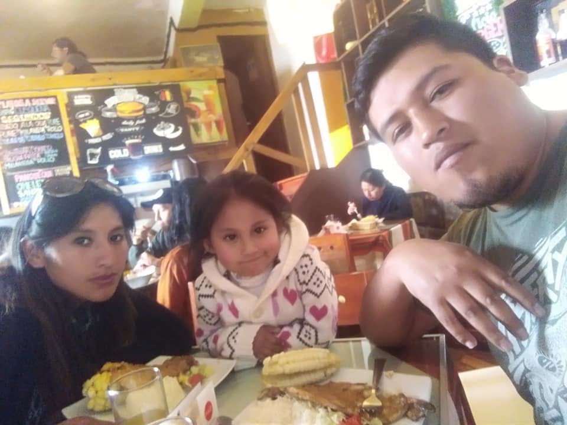

Bienvenido a mi perfil
Mi nombre es Mijail Lenin Huanca huirse, soy natural de Cusco, en la actualidad tengo una carrera tecnica como analista de sistemas, trabajo independientemente, tengo una familia hermosa con dos hijos y mi objetivo es culminar mi carrera universitaria
Conocimientos en software
Lista Desordenada
- Office a nivel profesional
- Diseño grafico
- diseño web a nivel basico
Conocimientos en hardware
Lista Ordenada
- Mantenimiento de computadoras
- Camaras de videovigilancia
- mantenimiento general de equipos de informatica
Galería de Imágenes
Muestra visual utilizando selectores avanzados, propiedades de caja y cuadrículas CSS.



Enlaces e Información Adicional
Para conocerme con mas detalles sigueme en mis redes sociales
Ir a facebook